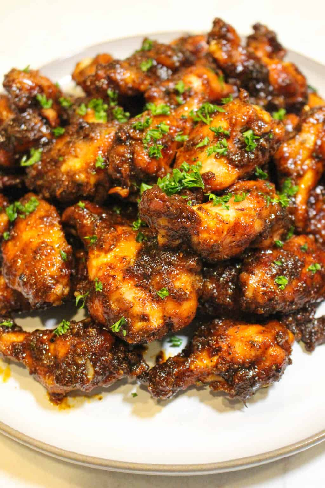

Honey Chipotle Chicken Wings

Description:
These Honey Chipotle Garlic Chicken Wings are a sweet and spicy twist on a classic.
They’re slathered in chipotle garlic seasoning, then grilled until juicy in the middle, perfectly crispy on the outside. They’re finished off with a sticky, sweet, and spicy Honey Chipotle Garlic Sauce.
These wings are ready in just 50 minutes and are the perfect way to satisfy the inevitable chicken wing craving.
Ingredients:
Chicken:
- 2 lbs Chicken Wings
- ½ cup Chipotle Garlic Seasoning
- 1 tbsp Cornstarch
- Canola Oil as needed
- Chopped Parsley for garnish
Honey Chipotle Garlic Sauce:
- 1 cup of Unsalted Butter
- 3 tbsp Brown Sugar
- 2.5 tbsp Honey
- 2 tbsp Minced Garlic
- 2 tbsp Chipotle Puree
- 2 tbsp of Bourbon or Whiskey
Steps:
- Begin by lathering your chicken wings in oil and mixing your Chipotle Garlic Seasoning with the corn starch. Season the wings thoroughly and set to the side.
- Preheat a grill to medium heat (around 325F) for direct cooking.
- Add your chicken wings to the grill and cook for about 8-10 minutes per side or until they reach 175F internal. Make sure to rotate them as necessary to prevent burning. Once done, pull the wings off and keep warm.
- Add a cast iron skillet to the grill and kick up the heat to 400F. Add all your ingredients for the Honey Chipotle Garlic Sauce and let simmer over the heat, consistently stirring, until the sauce has thickened (about 10 minutes). Watch your heat so that the sauce does not burn! If it does begin to burn, trash it and try again. Once the sauce is good, pull it off and let it cool for 10 minutes.
- Add your chicken wings to a bowl and toss them in the sauce. Garnish the wings with chopped parsley, serve and enjoy!
Return Home